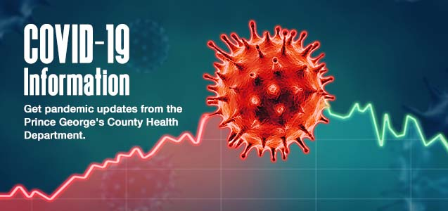

People with COVID-19 have had a wide range of symptoms reported – ranging from mild symptoms to severe illness. Symptoms may appear 2-14 days after exposure to the virus. Anyone can have mild to severe symptoms.
Possible symptoms include:
Fever or chills
Cough
Shortness of breath or difficulty breathing
Fatigue
Muscle or body aches
Headache
New loss of taste or smell
Sore throat
Congestion or runny nose
Nausea or vomiting
Diarrhea
Coronavirus disease (COVID-19) is an infectious disease caused by the SARS-CoV-2 virus.Most people who fall sick with COVID-19 will experience mild to moderate symptoms and recover without special treatment. However, some will become seriously ill and require medical attention.
The virus can spread from an infected person’s mouth or nose in small liquid particles when they cough, sneeze, speak, sing, or breathe. These particles range from larger respiratory droplets to smaller aerosols.
You can be infected by breathing in the virus if you are near someone who has COVID-19, or by touching a contaminated surface and then your eyes, nose or mouth. The virus spreads more easily indoors and in crowded settings.

Keep yourself and others safe
Protect yourself and those around you:
Get vaccinated as soon as it’s your turn and follow local guidance on vaccination.
Keep physical distance of at least 1 metre from others, even if they don’t appear to be sick. Avoid crowds and close contact.
Wear a properly fitted mask when physical distancing is not possible and in poorly ventilated settings.
Clean your hands frequently with alcohol-based hand rub or soap and water.
Cover your mouth and nose with a bent elbow or tissue when you cough or sneeze. Dispose of used tissues immediately and clean hands regularly.
If you develop symptoms or test positive for COVID-19, self-isolate until you recover

Wear a mask properly
To properly wear your mask:
Make sure your mask covers your nose, mouth and chin.
Clean your hands before you put your mask on, before and after you take it off, and after you touch it at any time
When you take off your mask, store it in a clean plastic bag, and every day either wash it if it’s a fabric mask or dispose of it in a trash bin if it’s a medical mask.
Don’t use masks with valves

Make your environment safer
The risks of getting COVID-19 are higher in crowded and inadequately ventilated spaces where infected people spend long periods of time together in close proximity.
Outbreaks have been reported in places where people have gather, often in crowded indoor settings and where they talk loudly, shout, breathe heavily or sing such as restaurants, choir practices, fitness classes, nightclubs, offices and places of worship.
To make your environment as safe as possible:
Avoid the spaces that are closed, crowded or involve close contact.
Meet people outside. Outdoor gatherings are safer than indoor ones, particularly if indoor spaces are small and without outdoor air coming in
If you can’t avoid crowded or indoor settings, take these precautions:
Open a window to increase the amount of natural ventilation when indoors
Wear a mask